燃料最优月面软着陆问题
本文直接搬运了我的有关课程报告，如有用词生硬等问题请多见谅。
让我们开始吧。
燃料最优月面软着陆问题求解
数学模型建立
以月面为原点、竖直向上为正方向，设登月舱高度 $h(t)$、速度 $v(t)$（向上为正）、质量 $m(t)$，发动机推力 $u(t)$ 满足：
月球表面重力加速度 $g$ 为常数，燃料消耗率 $\dot m = -k u$，$k>0$。状态方程为：
初始状态 $h(0)=h_0$, $v(0)=v_0$, $m(0)=M+F(0)$（其中 $M$ 为不含燃料的舱体质量，$F(0)$ 为初始燃料质量）。要求实现月球表面软着陆，即目标集:
性能指标为燃料消耗最小，等价于最大化终端质量，故取
极小值原理与最优控制形式
引入协态变量 $\lambda_1,\lambda_2,\lambda_3$，构造哈密顿函数:
最优协态方程为:
由终端约束及性能指标可得横截条件:
其中 $\gamma_1,\gamma_2$ 为目标集引入的两个拉格朗日乘子。
将 $H$ 中含有控制 $u$ 的项分离：
根据极小值原理，$u$ 需极小化 $H$，由线性项系数 $s(t)$ 的符号可得最优控制为 Bang‑Bang 形式：
式中 $s(t)=\dfrac{\lambda_2}{m} - k\lambda_3$ 称为开关函数。
控制序列分析与切换结构
由协态方程可知 $\lambda_1$ 为常数，故 $s(t)$ 的导数为:
若 $s(t)$ 在某区间恒为零，则 $\lambda_1\equiv0$，进而 $\lambda_2\equiv0$，$\lambda_3\equiv0$，与 $\lambda_3(t_f)=-1$ 矛盾。故 $s(t)$ 不恒为零且严格单调，至多一次过零。因此可能的控制序列为：
- 全程 $u^*=a$（消耗大，甚至可能反推离开）；
- 全程 $u^*=0$（自由落体，硬着陆）；
- $\{0,\,a\}$：先零推力，后最大推力；
- $\{a,\,0\}$：先最大推力，后零推力（后期无制动，硬着陆）；
- 多次切换。（可自行证明，非最优）
排除不可能及非最优序列后，唯一可行的最优控制序列为 $\{0,\,a\}$，即存在切换时刻 $\tau$，使得：
相轨迹与开关曲线
在 $[0,\tau)$ 上，$u^*=0$，由状态方程积分得自由落体相轨迹:
在 $(v,h)$ 相平面上为一组开口向下的抛物线，运动方向自右向左。
在 $[\tau,t_f]$ 上，$u^*=a$，软着陆条件 $h(t_f)=v(t_f)=0$ 决定了一条从切换点 $(\tau)$ 到原点的相轨迹。利用 $\dot v = a/m - g$ 和 $\dot m = -k a$ 可得:
其中 $t_d = t_f-\tau$。消去 $t_d$ 可得到 $f[v(\tau),h(\tau)]=0$，表示从该曲线上任一点出发，以 $u=a$ 制动均可实现软着陆。采用对数展开:
可得近似开关曲线:
其中 $b_1 = \frac12!\bigl[\frac{a}{m(\tau)}-g\bigr] > 0$，$b_2 = \frac12\frac{k a^2}{m^2(\tau)}$。
仿真实验与分析
理想开关曲线
尝试使用MATLAB绘制最优相轨迹如图所示。
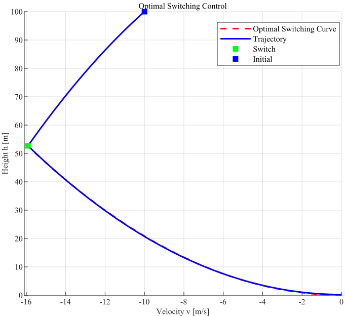
各相关参数如下表。
| 参数 | 数值 | 单位（均取国际单位制） |
|---|---|---|
| 着陆时间 $t_f$ | 10.21 | s |
| 消耗燃料 $\Delta m$ | 13.09 | kg |
| 切换时刻 $t_s$ | 3.66 | s |
| 最大推力使用时间 | 6.56 | s |
下面按顺序展示了航天器高度、速度、质量和协态变量、控制量、切换函数。
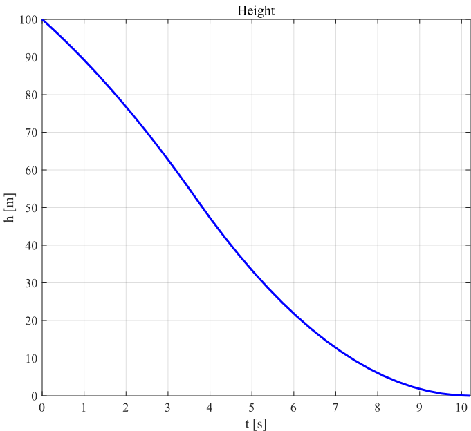
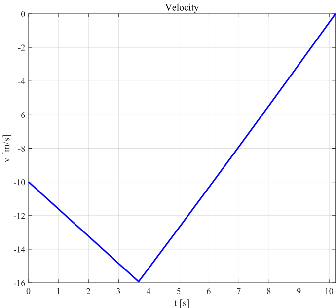
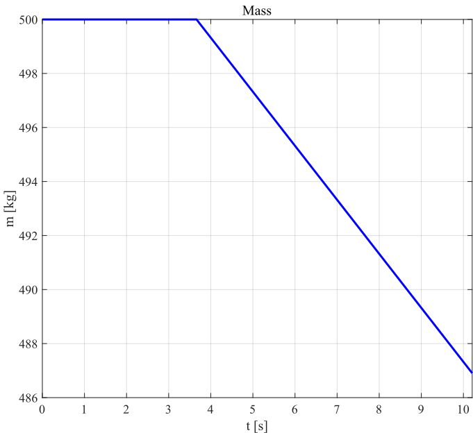
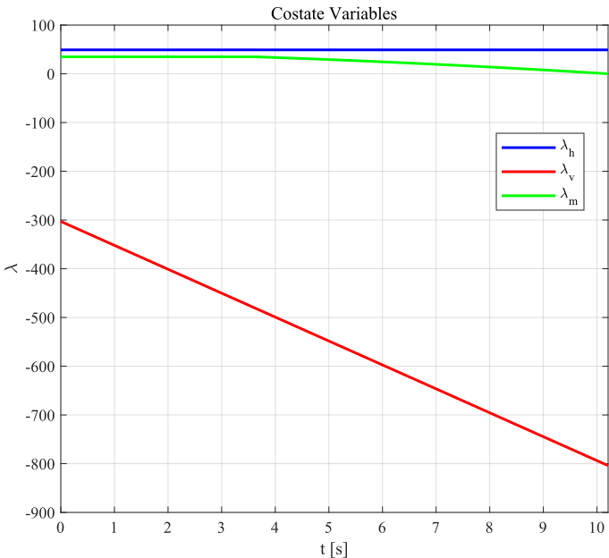
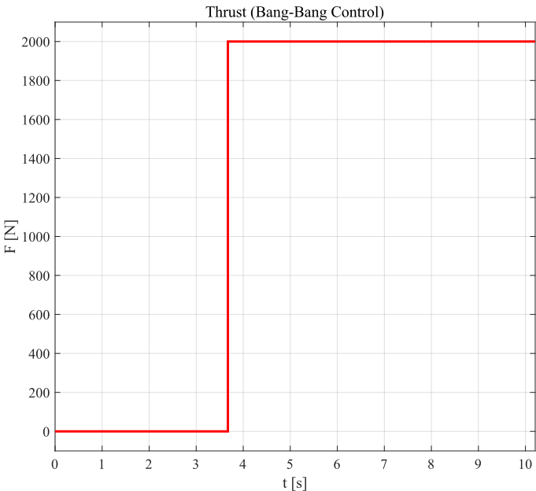
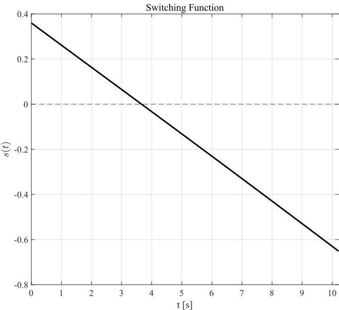
可清晰观察到推力呈现 Bang-Bang 特性，且$s(t)$ 在切换时刻过零，验证了极小值原理的最优性条件。
闭环反馈控制律
根据前面的分析最优控制可通过判断当前状态 $(h,v)$ 是否已经到达开关曲线 $f(h,v)=0$ 来实现反馈：
其中:
该控制律将开环控制改为闭环控制，既便于工程实现，又增强了系统的鲁棒性。下面展示Simulink仿真模型：
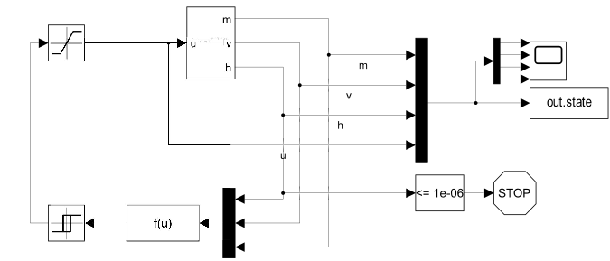
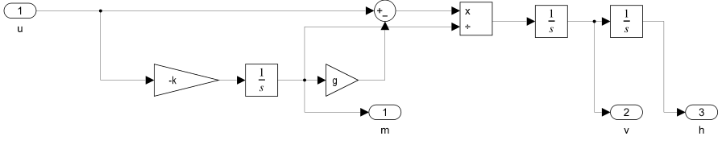
其中$f(u)$即接收状态变量计算开关值的函数。
经过仿真发现，若严格判断$f(h,v)$与0的关系（即采用$\varepsilon = 0$），则航天器最后将发生硬着陆。这是因为近似开关曲线$f(h,v)=0$相对于真实的最优开关曲线存在系统偏差。
由$f(h,v)$的推导过程可知，该近似表达式忽略了对数展开中的高阶项$\frac{k^3 a^3 t_d^3}{3m^3(\tau)} + \cdots$，导致近似曲线在$(h,v)$相平面中左偏。对于同一高度$h$，近似曲线给出的临界速度$|v_{approx}|$大于真实临界速度$|v_{exact}|$。这意味着当检测到$f(h,v)=0$时，航天器的实际高度已经过低（或速度过大），剩余制动距离不足以将速度减至零，从而以非零速度撞击月面。下图验证了本段讨论。
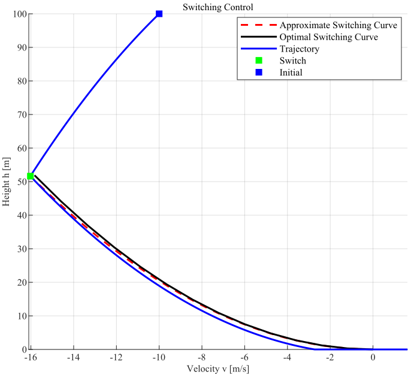
若考虑加入充分小的$\varepsilon > 0$，判断$f(h,v)$与$\varepsilon$的关系（即$f(h,v) \le \varepsilon$时开启制动），这相当于在近似曲线右侧引入了一个边界层：
该边界层的物理意义是提前触发制动，用以补偿近似曲线对制动时机的高估。然而，$\varepsilon$的选取需要权衡：若$\varepsilon$过小，则补偿不足，仍可能硬着陆； $\varepsilon$过大制动过早，此时补偿后的近似曲线成为系统的一个滑动模态，相轨迹将反复穿越开关曲线，产生抖振现象。
抖振的机理可从开关函数$f(h,v)$的动态行为解释。当系统状态进入边界层后，推力在$0$和$a$之间高频切换：
由于$f(h,v)$对$v$和$h$均敏感，且$v$的变化率$\dot v = u/m - g$在推力切换时发生跳变，导致$f$的符号在零点附近振荡。尤其在$h$较小时，$2\sqrt{b_1 h}$项对$h$的微小变化非常敏感，即使高度略有波动，也会引起$f$的快速变号，从而产生高频颤振。下图是这一现象的示意图。
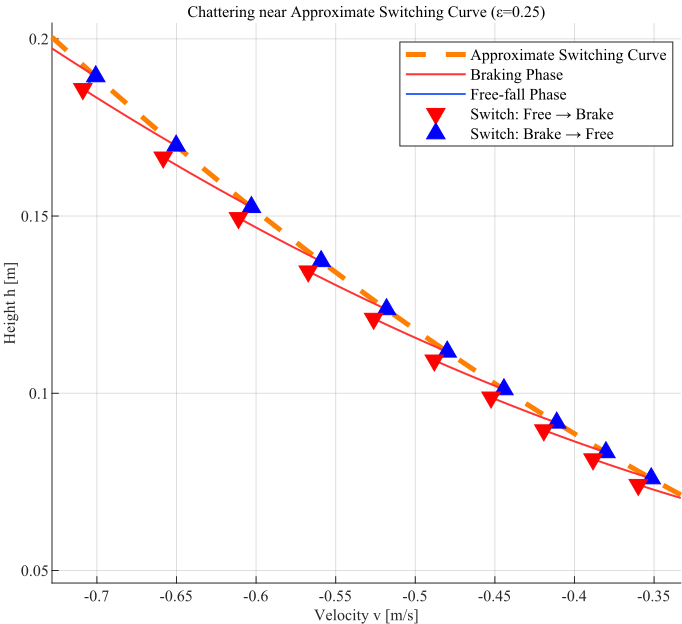
引入$\varepsilon = 0.25$进行仿真，其状态变量见下，可以观察到在接近着陆点时，发生了抖振。为了抑制这一现象，可以考虑引入饱和控制，也可以增加高度$h$的容忍，即提前终止控制。将对高度$h$的容忍设置为$0.01$，即当$h \le 0.01$时认为已到终点。可见抖振现象已基本得到缓解。
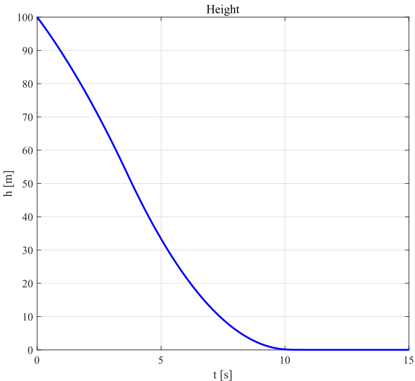
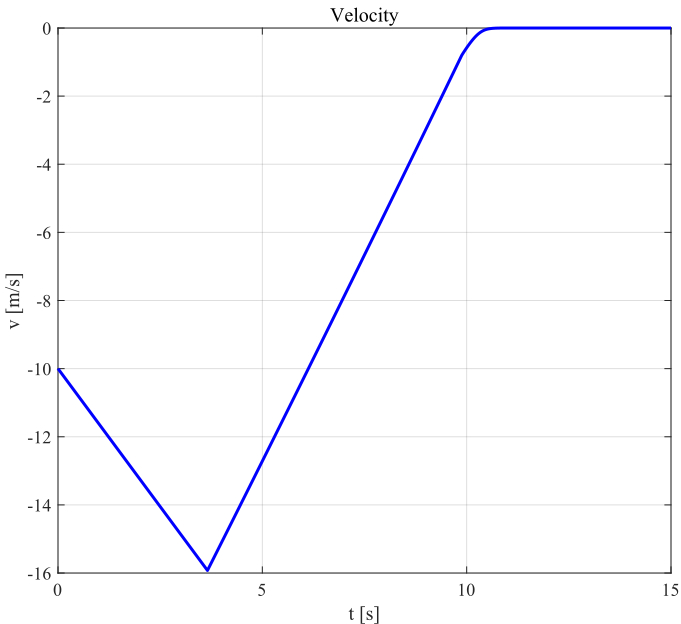
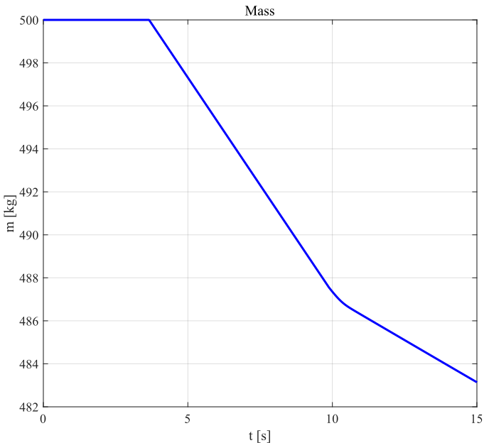

增加高度容忍后：